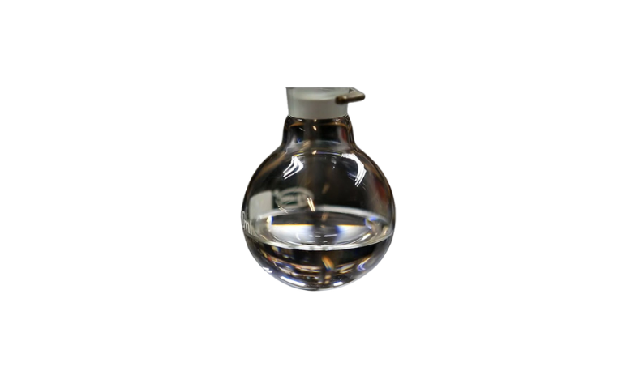
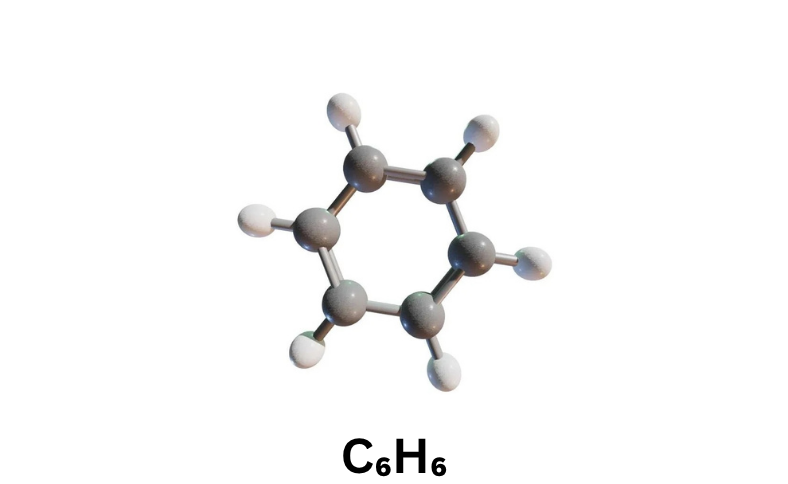

Our COA specific aromatic hydrocarbon for petrochemicals, paints & coatings, pharmaceuticals and more industries.
EC Number
200-753-7
Molecular Weight
78.11 g/mol
Purity
80% - 99.99% (upto 4N)
Packaging
160–210 kg Drums / 20 ft ISO tanks / SS & CS Tankers / IBC
MOQ
1 T.E.U. (FCL)
Customization (incl. but not limited to)
for Grades / Forms / Specifications / Properties / Packaging available on request
Common Names
Benzol / Cyclohexatriene / Phene (Root of Phenol)
Appearance ; Odor
Colorless liquid ;
Sweet, Aromatic, Gasoline-like Odor
Industrial Category ; Chemical Class
Petrochemical Feedstock / Industrial Solvent /
Chemical Intermediate ;
Aromatic Hydrocarbon (BTX Stream Component)
Forms
Liquid
IUPAC Name
cyclohexa-1,3,5-triene
Benzene is a key aromatic hydrocarbon widely utilized as a fundamental building block in the chemical and petrochemical industries. It is supplied in multiple purity levels and processing variants to meet the specific requirements of diverse applications ranging from large-scale industrial synthesis to highly sensitive laboratory and specialty uses. Carefully controlled refining processes ensure consistent composition, low impurity profiles, and reliable performance across applications such as nitration, hydrogenation, polymer production, and fine chemical manufacturing.
Advanced purification and quality control enable its use in demanding environments including pharmaceuticals, food processing, analytical testing, and high-precision spectroscopic analysis. With options tailored for enhanced stability, reduced sulfur content, and optimized reactivity, the product supports improved process efficiency, catalyst longevity, and superior end-product quality. Its versatility, scalability, and dependable supply make it an essential raw material across a broad spectrum of industrial and specialty chemical operations.
Our benzene grades are supplied with controlled purity levels and impurity specifications to meet diverse industrial and laboratory requirements.
| Grade | C₆H₆ (%) | Key Impurities | Form | Applications |
|---|---|---|---|---|
| Nitration Grade Benzene (NGB) | ≥ 99.5 – 99.8% |
Thiophene: ≤ 1–2 ppm Sulfur: ≤ 1–5 ppm Olefins: ≤ 0.01% |
Clear liquid |
Nitrobenzene, Aniline, Explosives (TNT), Dye intermediates, Agrochemicals, Pharmaceuticals, Rubber chemicals |
| Industrial Grade Benzene | ~ 99.0 – 99.5% |
Toluene: 0.2–0.5% Xylene: 0.1–0.3% Sulfur: ≤ 10–50 ppm |
Clear liquid |
Solvents, Fuel blending, Styrene production, Phenol/Acetone production, Resins, Adhesives, Paints |
| Hydrogenation Grade Benzene | ≥ 99.7 – 99.9% |
Olefins: ≤ 0.01% Sulfur: ≤ 0.5–1 ppm |
Clear liquid |
Cyclohexane production, Caprolactam (Nylon-6), Adipic acid, Nylon intermediates, Hydrogenation processes |
| Thiophene-Free Benzene | ≥ 99.8% |
Thiophene: ≤ 0.5 ppm Total sulfur: ≤ 1–2 ppm |
Clear liquid |
Pharmaceutical synthesis, Fine chemicals, Sensitive catalytic reactions, Electronic chemicals |
| Reagent Grade (AR Grade) | ≥ 99.8 – 99.9% |
Water: ≤ 0.02–0.05% Sulfur: ≤ 1–2 ppm Non-aromatics: ≤ 0.05% |
Clear liquid (lab packed) |
Laboratory analysis, Chemical research, Quality control testing, Organic synthesis |
| Spectroscopy Grade Benzene | ≥ 99.9% |
UV impurities: ≤ 0.001% Water: ≤ 0.01% |
Ultra-pure clear liquid |
UV/Vis spectroscopy, IR analysis, Calibration standards, Analytical instrumentation, High-precision testing |
| High Purity Benzene | ≥ 99.99% |
Total impurities: <100 ppm Sulfur: <1 ppm Water: ≤ 0.005% |
Ultra-pure liquid |
Semiconductor processing, Electronics manufacturing, Advanced R&D, Specialty chemicals, High-end synthesis |
| Motor Benzol (Crude Benzene) | ~ 70 – 90% |
Toluene: 5–20% Xylene: 2–10% Sulfur: 50–500 ppm |
Liquid mixture |
Fuel blending component, Industrial solvents, Aromatic recovery feedstock, Chemical processing feed |
Our benzene grades are tested as per internationally recognized ASTM methods to ensure consistent quality, purity, and performance across industrial and high-purity applications.
| Parameter | Method | Specification |
|---|---|---|
| Appearance | ASTM D4176 | Clear, colorless liquid (Motor Benzol: pale yellow) |
| Benzene Purity (C₆H₆) | ASTM D4492 / ASTM D7360 (GC Analysis) |
Industrial: ≥ 99.0% Nitration: ≥ 99.5–99.8% AR Grade: ≥ 99.8–99.9% Spectroscopy: ≥ 99.9% High Purity: ≥ 99.99% |
| Density @20°C | ASTM D4052 (Digital Density Meter) | 0.876 – 0.880 g/cm³ (Motor Benzol: 0.860 – 0.900) |
| Boiling Point | ASTM D850 (Distillation) |
Pure Benzene: 80.0 – 80.2°C Motor Benzol: 80 – 140°C range |
| Moisture | ASTM D6304 / ASTM E203 (Karl Fischer) |
Industrial: ≤ 0.05% High Purity: ≤ 0.005–0.02% |
| Total Sulfur | ASTM D5453 (UV Fluorescence) |
Industrial: ≤ 10–50 ppm Nitration: ≤ 1–5 ppm High Purity: ≤ 0.5–1 ppm |
| Thiophene | ASTM D1685 / GC-Specific Detection |
Standard: ≤ 1–2 ppm Thiophene-Free: ≤ 0.5 ppm |
| Aromatics (Toluene + Xylene) | ASTM D4492 (Gas Chromatography) |
Industrial: 0.3 – 0.8% Motor Benzol: 7 – 30% |
| Non-Aromatics | ASTM D2360 / ASTM D4492 | ≤ 0.05% (high purity grades) |
| Olefins | ASTM D1319 (Fluorescent Indicator Adsorption) | ≤ 0.01% |
| Color (Pt-Co) | ASTM D1209 | ≤ 10 (water white for high purity) |
| Acidity | ASTM D847 | Nil |
| Solidification Point | ASTM D852 | ≥ 5.4°C |
| Distillation Range | ASTM D850 | Within 1°C including 80.1°C (pure grades) |
| Property | Industrial Grade | Nitration Grade | High Purity / Spectroscopy | Motor Benzol |
|---|---|---|---|---|
| Appearance | Clear liquid | Clear, colorless | Ultra-clear | Pale yellow liquid |
| Odor | Aromatic | Aromatic | Pure aromatic | Strong aromatic |
| Boiling Point (°C) | 80 – 81 | 80.0 – 80.2 | 80.0 ± 0.05 | 80 – 140 |
| Melting Point (°C) | ~5.3 – 5.5 | 5.4 – 5.5 | 5.5 | -10 to 5 |
| Density @20°C (g/cm³) | 0.870 – 0.880 | 0.876 – 0.879 | 0.876 – 0.879 | 0.860 – 0.900 |
| Vapour Density | ~2.7 – 2.8 | ~2.77 | ~2.77 | 2.8 – 3.5 |
| Flash Point (°C) | -10 to -11 | -11 | -11 | -20 to -5 |
| Auto-Ignition Temp (°C) | 480 – 500 | 498 | 498 | 450 – 550 |
| Vapour Pressure @25°C | 90 – 100 mmHg | ~95 mmHg | ~95 mmHg | 100 – 200 mmHg |
| Water Solubility | 1.5 – 1.8 g/L | ~1.8 g/L | ~1.8 g/L | Variable |
High-purity benzene specifically refined for nitration processes, ensuring minimal sulfur and unsaturated impurities for consistent reaction performance.
Key Benefits: High reaction efficiency, reduced by-products, and consistent nitration performance.
Standard commercial benzene used across bulk chemical manufacturing processes where ultra-high purity is not critical.
Key Benefits: Economical, versatile, and widely applicable in industrial operations.
Highly purified benzene tailored for hydrogenation reactions, with extremely low levels of catalyst poisons such as sulfur and olefins.
Key Benefits: Enhanced catalyst life, improved reaction efficiency, and cleaner product output.
Specially treated benzene with thiophene and sulfur compounds removed, suitable for sensitive chemical and pharmaceutical applications.
Key Benefits: Improved product quality, reduced contamination risk, and consistent processing.
Analytical reagent grade benzene designed for laboratory use, offering high purity and compliance with analytical standards.
Key Benefits: Accurate analytical results, high reliability, and lab-grade consistency.
Ultra-high purity benzene with minimal absorbance, specifically prepared for UV, IR, and other spectroscopic analyses.
Key Benefits: High spectral accuracy, minimal interference, and superior analytical performance.
Refined benzene with very high purity levels, suitable for specialty chemical production and high-performance applications.
Key Benefits: Reliable performance, superior product quality, and reduced downstream purification.
Crude benzene fraction obtained from coke oven operations, typically containing toluene, xylene, and other aromatics.
Key Benefits: Cost-effective feedstock, suitable for refining and industrial fuel applications.
Benzene is classified as a highly flammable liquid and hazardous substance. It is carcinogenic (Category 1A) and mutagenic (Category 1B). Exposure may cause serious health effects, and strict safety precautions must be followed during handling and storage.
Detailed Safety Data Sheet (SDS) available upon request.
Benzene is packed and transported in compliance with international hazardous chemical regulations, ensuring product integrity, safety, and traceability across the entire supply chain. Packaging is selected based on order volume, export destination, and handling requirements to ensure safe delivery under controlled conditions.
Customized packaging, labeling, and logistics solutions are available based on regulatory requirements and customer specifications.
Our benzene supply chain is aligned with modern petrochemical sustainability practices, focusing on resource efficiency, emission reduction, and responsible handling across production and downstream applications.

